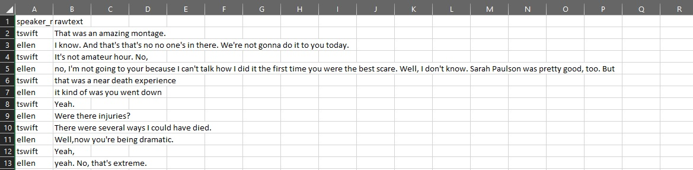
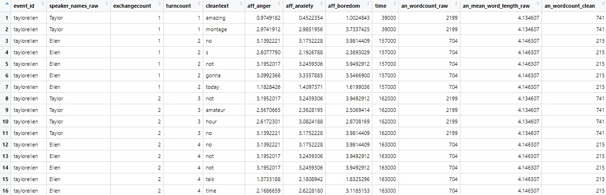

ConversationAlign analyzes alignment between interlocutors (conversation partners) engaged in two-person conversations. ConversationAlign works on language transcripts. It can handle text files (.txt) or comma separated value (.csv) spreadsheet style files. ConversationAlign transforms raw language data into simultaneous time series objects spanning 30 possible dimensions via an embedded lookup database.
October 2023: ConversationAlign is working, and we have repaired most of the bugs. However, we recommend for now that you check with one of the authors or maintainers of the package before running any largescale analyses. We can talk you through any potential hiccups or roadblocks given the idiosyncratic nature of your particular data.
Before starting: Prep your data
ConversationAlign can handle a home brew of your own preferred format. However, your transcripts must have the following header columns at a bare minimum:
1) Participant identifier (named Interlocutor’, ‘Speaker’, or ‘Participant’)
2) Text (named ‘Text’, ‘Utterance’, or ‘Turn’)
The order of your columns does not matter. Any other data in your transcripts (e.g., metadata, timestamps, grouping variables) will be retained. Here’s an example of a transcript that will work. Don’t worry about stripping punctuation. We will do that for you.

Considerations in prepping your language transcripts for ConversationAlign:
- Save each conversation transcript as a separate file (e.g., MaryJoe_FirstDateTalk.txt)
- Be careful/deliberate about your filenaming convention. The filename for each conversation will become its event ID in the dataframe
- Move all your language transcripts to be analyzed into one folder (e.g., “my_transcripts”) in the same directory you are running your R script.
- If you have metadata (e.g., age, timestamps, grouping variables), you can either append this to your original transcript or merge the metdata as a separate file. This is a useful option when you have many individual difference and demographic details.
Installation
Install the development version of ConversationAlign from GitHub by entering the following in your console or script:
install.packages("devtools")
devtools::install_github("Reilly-ConceptsCognitionLab/ConversationAlign")Read your transcripts into R
read_dyads()
This function will read all your files and concatenate them into a single dataframe, appending document IDs. You can call this dataframe whatever you like. ‘read_dyads’ will default to reading all csv and txt files in a folder called my_transcripts. Just remember that when you are finished processing a set of transcripts, make sure to move them out of that folder. You can think of ‘my_transcripts’ as a staging area for loading data into ConversationAlign.
MyRawLangSamples <- read_dyads()
#if you want to specify a different folder, supply your own path
MyRawLangSamples <- read_dyads("/my_custompath")| Event_ID | Participant_ID | RawText |
|---|---|---|
| taylorellen | Taylor | That was an amazing montage. |
| taylorellen | Ellen | I know. And that’s that’s no no one’s in there. We’re not gonna do it to you today. |
| taylorellen | Taylor | It’s not amateur hour. No, |
| taylorellen | Ellen | no, I’m not going to your because I can’t talk how I did it the first time you were the best scare. Well, I don’t know. Sarah Paulson was pretty good, too. But |
| taylorellen | Taylor | that was a near death experience |
| taylorellen | Ellen | it kind of was you went down |
| taylorellen | Taylor | Yeah. |
| taylorellen | Ellen | Were there injuries? |
| taylorellen | Taylor | There were several ways I could have died. |
| taylorellen | Ellen | Well,now you’re being dramatic. |
| taylorellen | Taylor | Yeah, |
| taylorellen | Ellen | yeah. No, that’s extreme. |
| taylorellen | Taylor | Yeah. |
| taylorellen | Ellen | It- I really just was watching that backstage. And I was just thinking like, thank you so much for going so above and beyond to make people happy. Yeah, |
| taylorellen | Taylor | well, |
| taylorellen | Ellen | that’s not a good example of it |
Clean your transcripts
clean_dyads()
‘clean_dyads’ uses numerous regex to clean and format the data your just read into R in the previous step. Although there are many cleaning steps, here are the big ones: 1) to lowercase 2) omit stopwords 3) replace contractions (e.g., ‘you’re’ to ‘you are’) 4) tick marks to apostrophes 5) hypens to spaces 6) omits numerals 7) omits/squishes extraneous white space 8) lemmatization
ConversationAlign calls the textstem package as a dependency to lemmatize your language transcript. This converts morphologiocal derivatives to their root forms. The default is lemmatize=T. Sometimes you want to retain language output in its native form. If this is the case, change the argument in clean_dyads to lemmatize=F.
‘clean_dyads’ outputs word count metrics pre/post cleaning by dyad and interlocutor. This can be useful if you are interested in whether one person just doesn’t produce many words or produces a great deal of empty utterances.
MyCleanLangSamples <- clean_dyads(MyRawLangSamples) #default is lemmatize=TRUE
#If you do NOT want your language sample lemmatized, change the lemmatize argument to F or FALSE
MyCleanLangSamples <- clean_dyads(MyRawLangSamples, lemmatize=FALSE)| Event_ID | Participant_ID | TurnCount | CleanText | NWords_ByPersonTurn_RAW | NWords_ByPersonTurn_CLEAN |
|---|---|---|---|---|---|
| taylorellen | Taylor | 1 | amazing | 5 | 2 |
| taylorellen | Taylor | 1 | montage | 5 | 2 |
| taylorellen | Ellen | 2 | no | 18 | 5 |
| taylorellen | Ellen | 2 | s | 18 | 5 |
| taylorellen | Ellen | 2 | not | 18 | 5 |
| taylorellen | Ellen | 2 | gonna | 18 | 5 |
| taylorellen | Ellen | 2 | today | 18 | 5 |
| taylorellen | Taylor | 3 | not | 5 | 4 |
| taylorellen | Taylor | 3 | amateur | 5 | 4 |
| taylorellen | Taylor | 3 | hour | 5 | 4 |
| taylorellen | Taylor | 3 | no | 5 | 4 |
| taylorellen | Ellen | 4 | no | 33 | 12 |
| taylorellen | Ellen | 4 | I | 33 | 12 |
| taylorellen | Ellen | 4 | not | 33 | 12 |
| taylorellen | Ellen | 4 | not | 33 | 12 |
Align your transcripts
align_dyads()
This is where a lot of the magic happens. align_dyads will take the cleaned dataframe you created in the last step and yoke values to every word by indexing a lookup database. The “align” step yokes data to each word in the cleaned transcript text then structures a dataframe by speaker (“Participant_ID”), exchange (“exchangecount”), and turn (“turncount”) across each dyad (“event_id”).
You will be prompted to select one of more variables (and up to three) to yoke data to that will be used in later steps to compute alignment indices. You will be shown a menu wherein you can select up to three variables to be yoked to your text. Following the menu steps, enter the number of each variable you would like with a space separating values (e.g., “10 14 19”).
Here are your choices:
anger, anxiety, boredom, closeness, confusion, dominance, doubt, empathy, encouragement, excitement, guilt, happiness, hope, hostility, politeness, sadness, stress, surprise, trust, valence, age of acquisition, word length (by letters), morphemes per turn, prevalence (how many people know this word), number of word senses (polysemy), word frequency (lg10), arousal, concreteness, semantic diversity, and semantic neighbors.
Variable key here:
https://reilly-lab.github.io/ConversationAlign_VariableLookupKey.pdf
ConversationAlign will prompt you to append any metadata you would like to add. This joins information from a separate file (e.g., neuropsych scores, ages, etc). Just give ConversationAlign a filepath to your CSV data or click “Enter” to skip this step. A metadata file might look like this:
METADATA IMAGE HERE
Run align_dyads on the cleaned dyads object you created using the clean_dyads function.
MyAlignedDyads <- align_dyads(MyCleanLangSamples)
Summarize transcripts
This last step consists of three methods, each of which computes a seperate index of alignment.
summarize_dyads_auc()
This returns the difference time series AUC (dAUC) for every variable of interest you specified. For example, summarize_dyads_auc will append dAUC values for hostility (if that’s what you’re interested in).
summarize_dyads_covar()
This returns a spearman correlation coefficient and range of lagged Pearson correlation coefficients for each variable of interest. A vector of Lags/leads for Pearson correlations are supplied as a parameter.
summarize_dyads_slope()
This return the intercept and slope of a simple linear regression for each interlocutor and the difference time series over each variable of interest. This provides a measure of change over time, providing information on who aligns to whom.
MyFinalDataframe_AUC <- summarize_dyads_auc(MyAlignedDyads, resample = T) #resample=T computes AUC by homogenizing the length of all dyads to the shortest tramscript (number of turns)
MyFinalDataframe_Covar <- summarize_dyads_covar(MyAlignedDyads, lags = c(-2, -1, 1, 2)) # lags are supplied as a vector, defaulting to a range of [-3, 3]
MyFinalDataframe_Slope <- summarize_dyads_slope(MyAlignedDyads, resample = F) # for auc and slope, when resample=F, it becomes much more difficult to compare metrics between conversations of different lengths.Caveat emptor
Things you must be careful about
Any analysis of language comes with assumptions and potential bias. For example, there are some instances where a researcher might care about morphemes and grammatical elements such as ‘the’, ‘a’, ‘and’, etc.. The default for ConversationAlign is to omit these as stopwords and to average across all open class words (e.g., nouns, verbs) in each turn by interlocutor. There are some specific cases where this can all go wrong. Here’s what you need to consider:
Stopwords : The package omits stopwords. See the stopword list here if you would like to inspect this list. We included greetings, idioms, filler words, numerals, and pronouns in the omissions list.
Lemmatization : The package will lemmatize your language transcripts by default. Lemmatization transforms inflected forms (e.g., standing, stands) into their root or dictionary entry (e.g., stand). This helps for yoking offline values (e.g., happiness, concreteness) to each word and also entails what NLP folks refer to as ‘term aggregation’. However, sometimes you might NOT want to lemmatize. You can easily change this option by using the argument, “lemmatize=FALSE,” to the clean_dyads function below.
Sample Size Issue 1: exchange count: The program derives correlations and AUC for each dyad as metrics of alignment. If there are 40 exchanges (80 turns) between conversation partners, the R value will be computed over 40 data points. For conversations less than about 30 turns, you should not trust the R values that ConversationAlign outputs.
Sample Size Issue 2 : matching to lookup database: ConversationAlign works by yoking values from a lookup database to each word in your language transcript. Some variables have lots of values characterizing many English words. Other variables (e.g., age of acquisition) only cover about 30k words. When a word in your transcript does not have a ‘match’ in the lookup datase, ConversationAlign will return an NA which will not go into the average of the words for that interlocutor and turn. This can be dangerous when there are many missing values. Beware!
Compositionality : ConversationAlign is a caveman in its complexity. It matches a value to each word as if that word is an island. Phenomena like polysemy (e.g., bank) and the modulation of one word by an intensifier (e.g., very terrible) are not handled. This is a problem for many of the affective measures but not for lexical variables like word length.
Resampling for AUC : summarize_dyads will output AUC values quantifying the distance between interlocutors on any dimension you specify. AUC will vary depending on the length of the dyad. Therefore, it is often necessary to resample (downsample) your dyads so that they are all of an equivalent length. This will get very wonky and uninterpretable for very short exchanges.
Background
Here are some documents describing how we derived our stopword list and lookup databases.
Our OSF site for this method paper is here: https://osf.io/atf5q/
Read more about how we created the internal lookup_database for ConversationAlign here: https://reilly-lab.github.io/ConversationAlign_LookupDb_Methods.pdf
Read more about the variables we have included to align on by linking here: https://reilly-lab.github.io/ConversationAlign_VariableLookupKey.pdf
You can read more about the nature of the stopword list and view it here: https://reilly-lab.github.io/ConversationAlign_StopwordsDb_Methods.pdf
Get in touch!
Contact jamie_reilly@temple.edu for feedback and assistance.